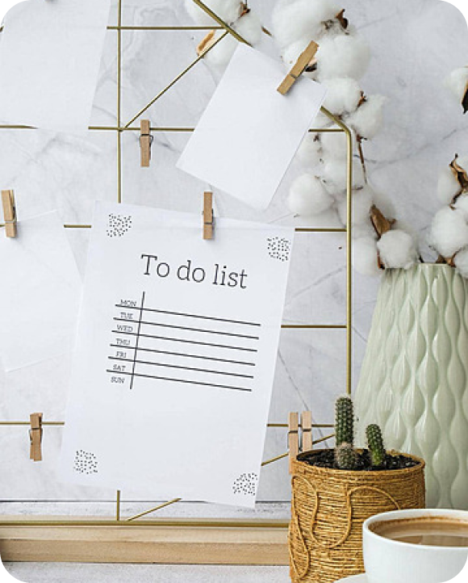

<div class="main w3-cursive">

    <div class="container">

        <div class="left-image">
            
        </div>

        <div class="right-section w3-cursive">

            <div class="to-do">

                <h2>To Do Py</h2>
                
                
                <p class="">Stay Organized, Get Things Done: Your Ultimate To-Do List App.
                    A todo list app is a digital task management tool designed to help users organize and prioritize their daily activities and responsibilities.</p>

                    <button class="btn btn-primary" routerLink="/sign-in">Get Started</button>
                    <a>Already have an account? Sign In</a>

            </div>      

        </div>

    </div>
  
